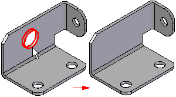
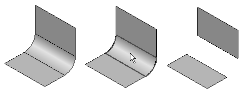

Delete Faces command
To access the Simplify Model environment, choose Tools tab→Model group→Simplify.
To access the Flatten Model environment, choose Tools tab→Model group→Flat Pattern.
Use the Delete Faces command to delete faces from the model.

You can use this command to do the following:
-
To remove faces from a design model to make design changes.
-
To remove voids from the interior of a design body.
-
To simplify a model in the Simplify Model environment so that it processes faster when used in an assembly.
-
To remove faces from a sheet metal part when working in the Flat pattern environment.
-
To remove faces from a construction body.
When you delete a face on a part body, which must always be a solid body, the gap created by the deleted surface is automatically closed.
When you delete a face on a construction body, which is not required to be a solid body, you can specify whether the gap is closed or left open using the Heal option on the command bar.
When you clear the Heal option, the gap is not closed and you can construct another surface to close the gap. This can be useful when working with foreign data which cannot be converted into a solid body when you import it.
